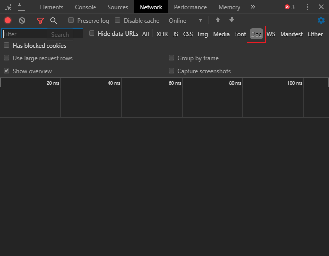
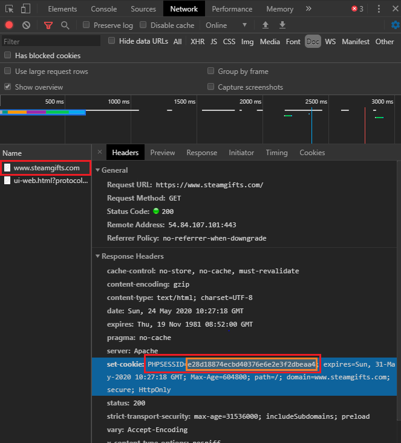

The program does not get access to your Steam account, it only needs PHPSESSID in order to gain access to the list of giveaways available to you and to be able to join them.
How to get PHPSESSID?
Open www.steamgifts.com and sign in via Steam. After that, press Ctrl+Shift+I (Google Chrome). A panel will open where we should select the “Network” tab. Next, we should select the "Doc" filter and reload the site page (press F5).
After that, several documents will appear in the list below, among which we should choose www.steamgifts.com. In the right pane, find PHPSESSID and copy the value.
